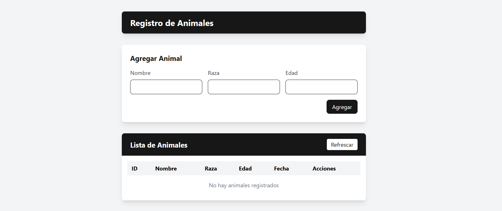
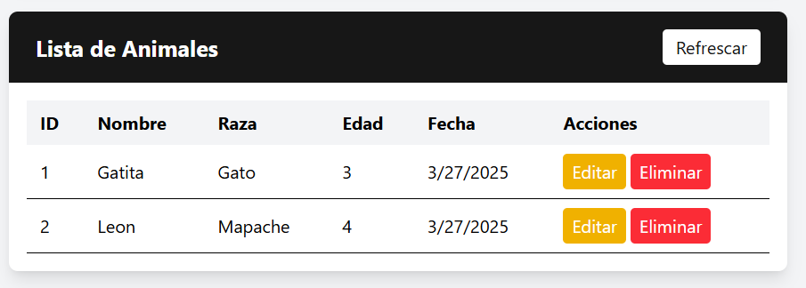

🎨 Documentación del Frontend#
Esta sección contiene la documentación detallada de la implementación del frontend para el API de Registro de Animales.
🌐 Frontend con React/Astro#
El frontend está desarrollado con React y Astro, proporcionando una interfaz web moderna y eficiente para interactuar con el API de Registro de Animales. Esta combinación ofrece una experiencia de usuario fluida y atractiva.
🚀 Tecnologías utilizadas#
- Astro: Framework web moderno que ofrece rendimiento excepcional mediante la generación de sitios estáticos con hidratación parcial.
- React: Biblioteca JavaScript para construir interfaces de usuario interactivas.
- Tailwind CSS: Framework CSS utilitario para diseñar rápidamente interfaces modernas.
- Fetch API: API nativa del navegador para realizar peticiones HTTP.
📁 Estructura del proyecto#
frontend/asantelis/app/
├── public/ # Archivos estáticos accesibles públicamente
│ └── favicon.svg # Icono de la página
├── src/ # Código fuente del proyecto
│ ├── assets/ # Recursos como imágenes y SVGs
│ ├── components/ # Componentes React reutilizables
│ │ ├── AnimalesCrud.jsx # Componente principal para el CRUD de animales
│ ├── layouts/ # Plantillas de diseño para las páginas
│ │ └── Layout.astro # Diseño principal de la aplicación
│ ├── pages/ # Páginas de la aplicación
│ │ └── index.astro # Página principal
│ └── styles/ # Estilos CSS
│ └── global.css # Estilos globales
├── astro.config.mjs # Configuración de Astro
├── package.json # Dependencias y scripts
└── tailwind.config.mjs # Configuración de Tailwind CSS
🧩 Componente AnimalesCrud#
El componente principal es AnimalesCrud, ubicado en /frontend/asantelis/app/src/components/AnimalesCrud.jsx. Este componente gestiona todas las operaciones CRUD (Crear, Leer, Actualizar, Eliminar) para los animales.
📊 Estado del Componente#
const [animales, setAnimales] = useState([]);
const [loading, setLoading] = useState(true);
const [formData, setFormData] = useState({ nombre: "", raza: "", edad: "" });
const [editingId, setEditingId] = useState(null);
const [alert, setAlert] = useState(null);
El componente mantiene el siguiente estado:
- animales: Lista de animales registrados.
- loading: Indicador de carga durante las operaciones asíncronas.
- formData: Datos del formulario para crear o actualizar un animal.
- editingId: ID del animal que se está editando (null si no se está editando ninguno).
- alert: Mensaje de alerta para mostrar al usuario.
🛠️ Funciones Principales#
📜 fetchAnimales#
const fetchAnimales = async () => {
setLoading(true);
try {
const response = await fetch(baseUrl);
if (!response.ok) throw new Error(`Error HTTP: ${response.status}`);
const data = await response.json();
setAnimales(data);
} catch (error) {
console.error("Error al obtener animales:", error);
showAlert(`Error al cargar los animales: ${error.message}`, "error");
} finally {
setLoading(false);
}
};
Esta función realiza una petición GET al endpoint /animales/ para obtener la lista de todos los animales registrados.
💾 handleSubmit#
const handleSubmit = async (e) => {
e.preventDefault();
if (!formData.nombre || !formData.raza || !formData.edad) {
showAlert("Por favor complete todos los campos correctamente", "warning");
return;
}
try {
const isEditing = editingId !== null;
const url = isEditing ? `${baseUrl}/${editingId}` : baseUrl;
const method = isEditing ? "PUT" : "POST";
const response = await fetch(url, {
method,
headers: { "Content-Type": "application/json" },
body: JSON.stringify(formData),
});
if (!response.ok) {
const errorData = await response.json();
throw new Error(errorData.detail || `Error HTTP: ${response.status}`);
}
await fetchAnimales();
showAlert(
`Animal ${isEditing ? "actualizado" : "agregado"} correctamente`
);
setFormData({ nombre: "", raza: "", edad: "" });
setEditingId(null);
} catch (error) {
console.error(
`Error al ${editingId ? "actualizar" : "agregar"} animal:`,
error
);
showAlert(`Error: ${error.message}`, "error");
}
};
Esta función maneja el envío del formulario para crear o actualizar un animal. Dependiendo de si se está editando un animal existente o creando uno nuevo, realiza una petición POST o PUT al endpoint correspondiente.
🗑️ handleDelete#
const handleDelete = async (id) => {
if (!confirm("¿Está seguro de que desea eliminar este animal?")) return;
try {
const response = await fetch(`${baseUrl}/${id}`, {
method: "DELETE",
});
if (!response.ok) throw new Error(`Error HTTP: ${response.status}`);
await fetchAnimales();
showAlert("Animal eliminado correctamente");
} catch (error) {
console.error("Error al eliminar animal:", error);
showAlert(`Error al eliminar: ${error.message}`, "error");
}
};
Esta función maneja la eliminación de un animal. Muestra un diálogo de confirmación y, si el usuario confirma, realiza una petición DELETE al endpoint /animales/{id}.
🔔 showAlert#
const showAlert = (message, type = "success") => {
setAlert({ message, type });
setTimeout(() => setAlert(null), 3000);
};
Esta función muestra un mensaje de alerta temporal al usuario, que desaparece automáticamente después de 3 segundos.
✏️ handleEdit#
const handleEdit = (animal) => {
setFormData({
nombre: animal.nombre,
raza: animal.raza,
edad: animal.edad,
});
setEditingId(animal.id);
// Hacer scroll al formulario
window.scrollTo({ top: 0, behavior: "smooth" });
};
Esta función prepara el formulario para editar un animal existente, cargando sus datos actuales y haciendo scroll hacia el formulario.
🖼️ Interfaz de Usuario#
El frontend con React/Astro incluye:
- 📝 Formulario de Registro/Edición: Un formulario con campos para el nombre, raza y edad del animal, y botones para agregar o actualizar el animal.

- 📊 Tabla de Animales: Una tabla que muestra la lista de animales registrados, con columnas para ID, nombre, raza, edad y fecha de registro, y botones para editar y eliminar cada animal.

- 🔔 Alertas: Mensajes de alerta que se muestran al usuario después de realizar operaciones, indicando si fueron exitosas o si ocurrió algún error.
🔄 Flujo de trabajo#
El flujo de trabajo típico para interactuar con la aplicación es el siguiente:
- 🚀 Inicio: Al cargar la página, se realiza una petición al backend para obtener la lista de animales registrados.
- ➕ Registro: El usuario puede completar el formulario y hacer clic en "Agregar" para registrar un nuevo animal.
- ✏️ Edición: El usuario puede hacer clic en "Editar" junto a un animal para cargar sus datos en el formulario y modificarlos.
- 🗑️ Eliminación: El usuario puede hacer clic en "Eliminar" junto a un animal para eliminarlo, previa confirmación.
📋 Integración con el backend#
El frontend se comunica con el backend a través de la API REST. Las principales interacciones son:
- 📥 GET /animales: Obtiene la lista de todos los animales registrados.
- 📤 POST /animales: Registra un nuevo animal.
- 🔍 GET /animales/{id}: Obtiene los detalles de un animal específico.
- ✏️ PUT /animales/{id}: Actualiza los detalles de un animal específico.
- 🗑️ DELETE /animales/{id}: Elimina un animal específico.
🚀 Guía de instalación y uso#
📋 Requisitos previos#
- Node.js (versión 16 o superior)
- npm (incluido con Node.js)
- Backend del API de Registro de Animales en ejecución
⚙️ Instalación#
-
Clona el repositorio:
git clone <url-del-repositorio> -
Navega al directorio del frontend:
cd itm_2025_soa_u3/frontend/asantelis/app -
Instala las dependencias:
npm install
🏃♂️ Ejecución#
-
Asegúrate de que el backend esté en ejecución:
# En otra terminal cd itm_2025_soa_u3 uv run fastapi run -
Inicia el servidor de desarrollo de Astro:
npm run dev -
Abre tu navegador en la dirección que se muestra en la terminal (generalmente http://localhost:4321)
🏗️ Construcción para producción#
Para construir la aplicación para producción:
npm run build
Esto generará una versión optimizada de la aplicación en el directorio dist/.
📱 Visualización previa de la versión de producción#
Para visualizar la versión de producción localmente:
npm run preview
🧩 Personalización y extensión#
🎨 Personalización de estilos#
El proyecto utiliza Tailwind CSS para los estilos. Puedes personalizar los estilos modificando:
src/styles/global.css: Para estilos globalestailwind.config.mjs: Para configurar los temas y colores de Tailwind
➕ Añadir nuevas funcionalidades#
Para añadir nuevas funcionalidades al componente AnimalesCrud.jsx:
- Define nuevos estados si es necesario
- Implementa las funciones para manejar la nueva funcionalidad
- Actualiza la interfaz de usuario para incluir los nuevos elementos
🔄 Integración con otras APIs#
Si deseas integrar el frontend con otras APIs:
- Modifica la variable
baseUrlen el componenteAnimalesCrud.jsx - Ajusta las estructuras de datos y funciones para adaptarse a la nueva API
- Actualiza la interfaz de usuario según sea necesario